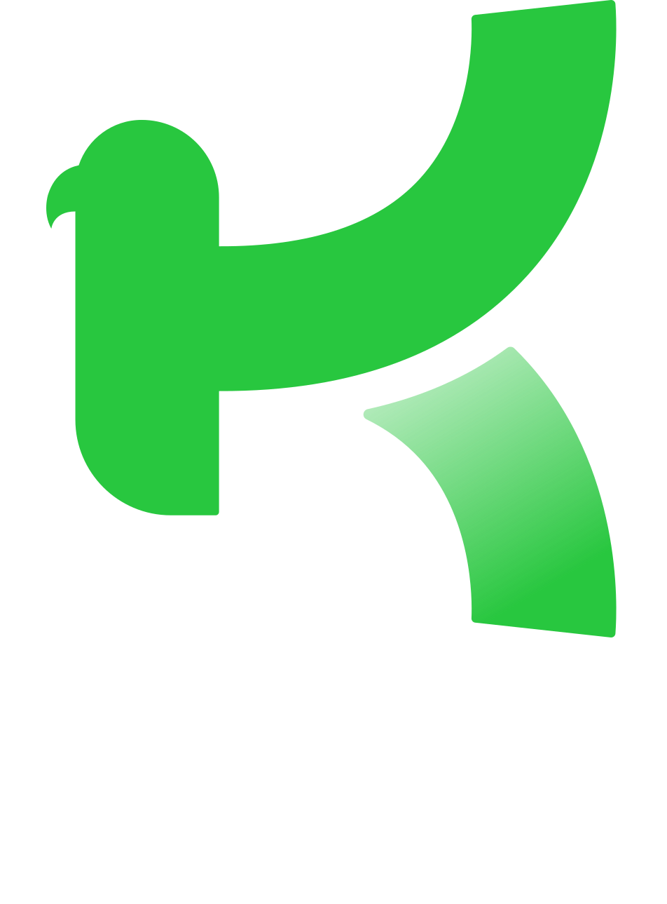

We built a fast, searchable Sharia Stock Screener for Kestrl in 7 days; a deadline their own
internal team said was impossible, ready to demo live at a major AI pitch event.

Islamic Fintech — Stock Screener MVP, delivered November 2025
Kestrl had a database full of Sharia-screened stocks, but it was sitting in a spreadsheet, invisible to their users. They were 12 days away from pitching at a major AI event and needed that data turned into a clean, working feature on their website for the demo. Their internal team was already stretched too thin and didn't believe it was possible to build in time.